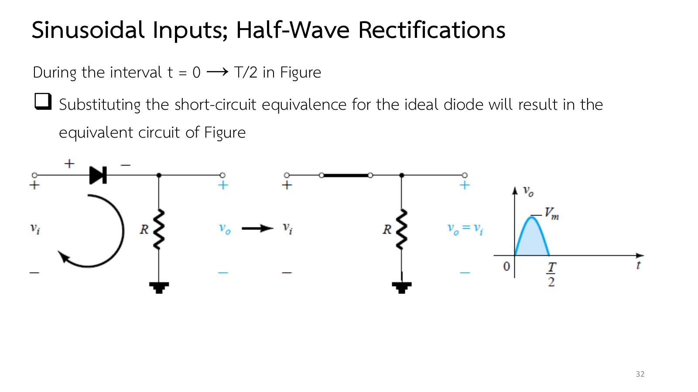
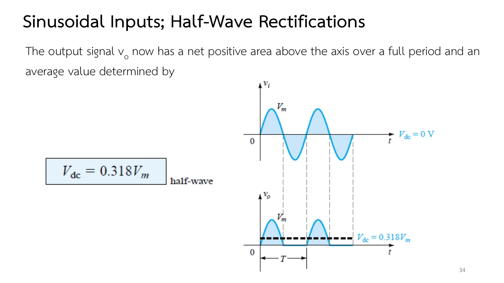

วงจรเรียงกระแสครึ่งคลื่น Half-wave rectification
Half-wave rectification A sine wave through one diode
ไฟบ้านเป็นกระแสสลับ แต่วงจรอิเล็กทรอนิกส์แทบทุกชนิดต้องใช้แหล่งจ่ายกระแสตรง ก้าวแรกของการแปลงใช้สิ่งที่เรารู้แล้วเกี่ยวกับไดโอด: ยอมให้กระแสไหลทางเดียว ป้อนสัญญาณไซน์ \(v_i = V_m\sin\omega t\) ให้ไดโอดหนึ่งตัวกับตัวต้านทาน ขาออกจะเหลือครึ่งคลื่นที่มีค่าเฉลี่ยไม่เป็นศูนย์ นี่คือการเรียงกระแส (rectification) หน้านี้มีภาพจำลองตามเวลาที่ช้าลง (1 คาบใช้ 4 วินาที) ที่เลือกแบบจำลองของไดโอดได้ (ส่วน A) โจทย์ Ex.13 ที่ไดโอดหันกลับทาง พร้อมแรงดันย้อนกลับสูงสุด (peak inverse voltage, PIV) ที่ไดโอดต้องทน และแบบฝึกเพิ่ม (สไลด์บทที่ 2 ชุดที่ 1 หน้า 31–39 · Boylestad หัวข้อ 2.6)
Mains power is ac, yet almost every electronic circuit needs a dc supply. The first step of the conversion uses what we already know about the diode: it lets current through one way only. Feed a sine wave \(v_i = V_m\sin\omega t\) to one diode and a resistor, and the output keeps half of each cycle, with a non-zero average: rectification. This page runs it in slowed-down time (one period takes 4 s) with a choice of diode model (section A), works Ex.13 with the diode turned round, together with the peak inverse voltage (PIV) the diode must withstand, and ends with more practice (chapter 2 slides, Part I, pp. 31–39 · Boylestad section 2.6).
ประเด็นสำคัญของหน้านี้
- ครึ่งคาบที่ไดโอดนำ (\(0 \to T/2\) เมื่อไดโอดหันตามแหล่งจ่าย): ไดโอดอุดมคติเป็นลัดวงจร \(v_o = v_i\) ครึ่งคาบที่เหลือไดโอดเป็นเปิดวงจร \(v_o = iR = 0\) (สไลด์หน้า 32–33)
- ระดับกระแสตรง (ค่าเฉลี่ยของขาออกตลอดคาบ) ของครึ่งคลื่นคือ \(V_{dc} = 0.318V_m\) ซึ่ง 0.318 คือ \(1/\pi\) (สไลด์หน้า 34)
- ไดโอดซิลิคอน นำเมื่อ \(v_i\) เกิน 0.7 V และขณะนำ \(v_o = v_i - 0.7\) V ตำราประมาณ \(V_{dc} \cong 0.318(V_m - V_K)\) ซึ่งสำคัญเฉพาะเมื่อ \(V_m\) ไม่ใหญ่กว่า \(V_K\) มากนัก (สไลด์หน้า 35)
- แรงดันย้อนกลับสูงสุด (peak inverse voltage, PIV หรือ peak reverse voltage, PRV): ขณะไม่นำ ไดโอดรับแรงดันของขาเข้าทั้งหมด จึงต้องมีพิกัด PIV ≥ \(V_m\) ไม่อย่างนั้นจะเข้าย่านซีเนอร์ (สไลด์หน้า 39)
Key points of this page
- The half period the diode conducts (\(0 \to T/2\) with the diode pointing with the source): an ideal diode is a short, so \(v_o = v_i\); for the other half it is an open circuit and \(v_o = iR = 0\) (slides pp. 32–33).
- The dc level (the average of the output over a period) of a half-wave output is \(V_{dc} = 0.318V_m\), 0.318 being \(1/\pi\) (slide p. 34).
- A silicon diode conducts once \(v_i\) passes 0.7 V and then \(v_o = v_i - 0.7\) V; the book approximates \(V_{dc} \cong 0.318(V_m - V_K)\), which matters only when \(V_m\) is not much larger than \(V_K\) (slide p. 35).
- The peak inverse voltage (PIV, or peak reverse voltage, PRV): while off, the diode takes the whole input, so its rating must be PIV ≥ \(V_m\), or it enters the Zener region (slide p. 39).
ไดโอดที่สลับสถานะทุกครึ่งคาบ
A diode that switches every half period
จนถึงตอนนี้แหล่งจ่ายมีค่าคงที่ สไลด์หน้า 31 เปลี่ยนเป็นสัญญาณไซน์ \(v_i = V_m\sin\omega t\) ป้อนวงจรที่ง่ายที่สุด คือไดโอดหนึ่งตัวกับ R เคล็ดลับคือมองทีละขณะ: ในขณะหนึ่ง ขาเข้าก็คือแหล่งจ่ายกระแสตรงค่าหนึ่ง วิธีของหน้า 2.2 จึงยังใช้ได้
ช่วง \(0 \to T/2\) ขาเข้าเป็นบวก ไดโอดอุดมคติเป็นลัดวงจร \(v_o = v_i\) (สไลด์หน้า 32) ช่วง \(T/2 \to T\) ขาเข้าเป็นลบ ไดโอดเป็นเปิดวงจร ประจุไม่มีทางไหล \(v_o = 0\) (สไลด์หน้า 33) ขาออกจึงเหลือแต่ยอดบวก มีพื้นที่เหนือแกนสุทธิ และมีค่าเฉลี่ย \(V_{dc} = 0.318V_m\) (สไลด์หน้า 34) ซึ่ง 0.318 ก็คือ \(1/\pi\)
Until now the sources were constant. Slide p. 31 swaps in a sine wave, \(v_i = V_m\sin\omega t\), feeding the simplest circuit there is: one diode and R. The trick is to look one instant at a time: at any instant the input is just a dc source of some value, so the method of page 2.2 still works.
From \(0\) to \(T/2\) the input is positive and the ideal diode is a short, \(v_o = v_i\) (slide p. 32). From \(T/2\) to \(T\) it is negative, the diode is an open circuit with no path for charge, and \(v_o = 0\) (slide p. 33). Only the positive humps remain, with a net area above the axis and an average of \(V_{dc} = 0.318V_m\) (slide p. 34), where 0.318 is \(1/\pi\).




↓ ส่วน A: ดูจุดทำงานวิ่งไปตามลักษณะสมบัติของไดโอด และเส้นประสีเขียวของ \(V_{dc}\) ที่หาจากคลื่นจริง
↓ Section A: watch the operating point ride along the diode characteristic, and the dashed green \(V_{dc}\) found from the actual wave
วงจรเรียงกระแสครึ่งคลื่นตามเวลา
A half-wave rectifier in time
สไลด์หน้า 35 เปลี่ยนเป็นไดโอดซิลิคอน: ขาเข้าต้องเกิน 0.7 V ไดโอดจึงนำ และขณะนำ \(v_o = v_i - 0.7\) V ตำราจึงประมาณ \(V_{dc} \cong 0.318(V_m - V_K)\) ลองเลือกไดโอดซิลิคอนแล้วลด \(V_m\) เหลือไม่กี่โวลต์ ดูว่า 0.7 V เริ่มมีผลมากเมื่อใด
Slide p. 35 switches to a silicon diode: the input must pass 0.7 V before the diode conducts, and while it conducts \(v_o = v_i - 0.7\) V, so the book approximates \(V_{dc} \cong 0.318(V_m - V_K)\). Choose the silicon diode and lower \(V_m\) to a few volts to see when the 0.7 V starts to matter.
![Slide 35, Sinusoidal Inputs; Half-Wave Rectification: the effect of using a silicon diode with V_T = 0.7 V is demonstrated in the figure for the forward-bias region. For levels of v_i less than 0.7 V the diode is still in an open-circuit state and v_o = 0 V. When conducting, the difference between v_o and v_i is a fixed level of V_T = 0.7 V and v_o = v_i − V_T. Boxed: V_dc ≅ 0.318(V_m − V_T). The figure shows v_i with a dashed line at V_T = 0.7 V, the circuit with a 0.7 V battery, and v_o peaking at V_m − V_T with the offset due to V_T marked. Caption: Effect of V_T on half-wave rectified signal.](slides/ch2a/p35.webp)
ภาพบนสุดคือวงจร ถัดมาคือลักษณะสมบัติของไดโอดที่จุดทำงานวิ่งไปตามกราฟ และล่างสุดคือรูปคลื่นของ \(v_i\) (ฟ้า) กับ \(v_o\) (เหลือง) เส้นแนวตั้งคือขณะปัจจุบัน เส้นประสีเขียวคือ \(V_{dc}\) ที่หาจากคลื่นจริง เลือกแบบจำลองของไดโอด ปรับ \(V_m\) หรือกลับทิศไดโอด แล้วเทียบ \(V_{dc}\) กับสูตรในแผงข้างภาพ "ไดโอดจริง" คือไดโอดซิลิคอนของหน้า 1.6
On top is the circuit, then the diode characteristic with the operating point riding along it, and at the bottom the waveforms of \(v_i\) (blue) and \(v_o\) (yellow); the vertical line marks the present instant and the dashed green line is the \(V_{dc}\) found from the actual wave. Choose the diode model, change \(V_m\) or turn the diode round, and compare \(V_{dc}\) with the formulas in the panel. The "actual diode" is the silicon diode of page 1.6.
Ex.13: ไดโอดหันเข้าหาแหล่งจ่าย
Ex.13: the diode facing the source
Ex.13 (สไลด์หน้า 36) กลับทิศไดโอดให้หันเข้าหาแหล่งจ่าย ก่อนเปิดเฉลย ลองเดาว่าครึ่งไหนของคลื่นจะไปถึง R และ \(V_{dc}\) จะเป็นบวกหรือลบ ท้ายข้อ สไลด์หน้า 39 ถามต่อว่าในครึ่งที่ไม่นำ ไดโอดต้องทนแรงดันย้อนกลับเท่าใด
Ex.13 (slide p. 36) turns the diode round to face the source. Before opening the solution, guess which half of the wave reaches R and whether \(V_{dc}\) will be positive or negative. At the end, slide p. 39 asks the next question: how much reverse voltage must the diode withstand in the half when it is off?

ขาเข้า \(v_i = 20\sin\omega t\) V ต่อกับไดโอดอุดมคติที่หันหัวลูกศรเข้าหาแหล่งจ่าย และ R = 2 kΩ (a) จงเขียนรูปคลื่นขาออกและหาระดับกระแสตรง (b) ทำซ้ำเมื่อใช้ไดโอดซิลิคอน (c) ทำ (a) และ (b) ซ้ำเมื่อ \(V_m\) = 200 V แล้วเทียบผล
The input \(v_i = 20\sin\omega t\) V drives an ideal diode whose arrowhead points at the source, and R = 2 kΩ. (a) Sketch the output and find its dc level. (b) Repeat with a silicon diode. (c) Repeat (a) and (b) with \(V_m\) = 200 V and compare.
ภาพจำลองวิ่งตามเวลาจริงที่ช้าลง กราฟใต้วงจรคือ \(v_i\) และ \(v_o\) ที่ตัวแก้วงจรคำนวณทีละขณะ ลองตอบก่อน
The simulation runs in slowed-down time; under the circuit are \(v_i\) and the \(v_o\) the solver finds instant by instant. Try it first.
![Slide 39, Sinusoidal Inputs; Half-Wave Rectification, the peak inverse voltage (PIV): the PIV [or PRV (peak reverse voltage)] rating of the diode is of primary importance in the design of rectification systems. Recall that it is the voltage rating that must not be exceeded in the reverse-bias region or the diode will enter the Zener avalanche region. Applying Kirchhoff's voltage law, the PIV rating of the diode must equal or exceed the peak value of the applied voltage: boxed PIV rating ≥ V_m, half-wave rectifier. The figure: the circuit at the negative peak, V_m across the open diode, I = 0 and V_o = IR = (0)R = 0 V.](slides/ch2a/p39.webp)
ฝึกเพิ่ม
More practice
ลองทำดู 1 — ดูไดโอดสลับสถานะ
- ส่วน A ใช้ไดโอดอุดมคติ: จุดทำงานบนลักษณะสมบัติวิ่งขึ้นตามแกนตั้งในครึ่งบวก แล้ววิ่งไปตามแกนนอนด้านลบในครึ่งลบ ตรงกับลัดวงจรและเปิดวงจร
- เลือกซิลิคอนแล้วลด \(V_m\) เหลือ 2 V: ขาออกเหลือยอดเพียง 1.3 V และ \(V_{dc}\) ต่างจาก \(0.318V_m\) มาก
- เลือก "ไดโอดจริง": เข่าของกราฟไม่คม จุดทำงานโค้งขึ้นไปตามเส้น ขาออกจึงต่ำกว่าแบบ 0.7 V เล็กน้อยเมื่อกระแสสูง
ลองทำดู 2 — สูตรไหนแม่นกว่า
- เลือกซิลิคอน \(V_m\) = 20 V: \(V_{dc}\) จากคลื่นจริงราว 6.02 V อยู่ระหว่าง \(0.318(V_m - 0.7)\) = 6.14 V ของตำรากับ \(0.318V_m - 0.7\) = 5.66 V ของสไลด์หน้า 50
- เหตุผล: ไดโอดกินแรงดัน 0.7 V ตลอดราวครึ่งคาบที่นำ ค่าเฉลี่ยตลอดคาบจึงลดลงราว 0.7/2 = 0.35 V จาก \(0.318V_m\) = 6.37 V
Try this 1 — watch the diode switch
- In section A with the ideal diode, the operating point climbs the vertical axis in the positive half and runs along the negative horizontal axis in the negative half: the short and the open circuit.
- Choose silicon and lower \(V_m\) to 2 V: the output peaks at only 1.3 V and \(V_{dc}\) is far from \(0.318V_m\).
- Choose the "actual diode": its knee is not sharp, so the operating point curves up along the line and the output is a little below the 0.7 V model at high current.
Try this 2 — which formula is closer?
- Choose silicon with \(V_m\) = 20 V: the \(V_{dc}\) of the actual wave, about 6.02 V, lies between the book's \(0.318(V_m - 0.7)\) = 6.14 V and the \(0.318V_m - 0.7\) = 5.66 V of slide p. 50.
- The reason: the diode takes 0.7 V for about the half period it conducts, so the average over the period falls by about 0.7/2 = 0.35 V from \(0.318V_m\) = 6.37 V.